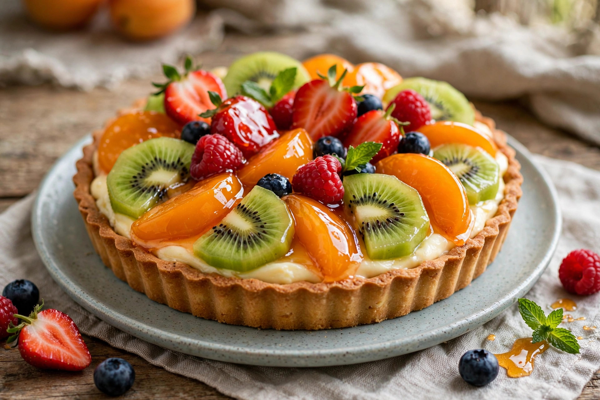

From Wikipedia, the free encyclopedia
| Tart | |
|---|---|
 | |
| Type | Pastry |
| Course | Dessert or savoury |
| Main ingredients | Pastry shell; sweet or savoury filling |
A tart is a baked dish consisting of a filling over a pastry base with an open top not covered with pastry. The pastry is usually shortcrust, and the filling may be sweet or savoury, though modern tarts are usually fruit-based, sometimes filled with custard. Tarts are typically baked in a shallow pan with fluted sides and a removable bottom.
Tarts developed in medieval European cooking from the tradition of pies; by the 16th century they had become fashionable in aristocratic French cuisine, where elaborate fruit and custard tarts were produced by specialist pâtissiers. The word derives from the Old French tarte.
Well-known varieties include the French tarte Tatin (an upside-down caramelised apple tart), lemon tart, chocolate tart, Bakewell tart from England, and savoury tarts such as the Alsatian tarte flambée and quiche. Small individual tarts are called tartlets; egg custard tarts and Portuguese pastéis de nata are popular worldwide.